Mara Ocie Kaisa Solen
PhD student, pet parent, researcher, educator, etc
Email: marasolen@gmail.com
LinkedIn: linkedin.com/in/mara-solen
GitHub: github.com/marasolen
PhD student, pet parent, researcher, educator, etc
Email: marasolen@gmail.com
LinkedIn: linkedin.com/in/mara-solen
GitHub: github.com/marasolen
Visualization of Deep Time in Informal Learning Environments
A design study with a focus of making deep time more understandable to museum visitors. In collaboration with Laura Lukes.
Ongoing
VIVA: Virtual Healthcare Interactions Using Visual Analytics
A design study on creating a flexible visualization system for a healthcare use case. In collaboration with HealthLink BC and DigEM.
Ongoing
Scoping the Future of Visualization Literacy: A Review
A survey paper of visualiation literacy literature that identifies, describes, and makes a case for three themes to be considered in future research: foundations, believability, and engagement. It also contains an analysis of participant pools from existing visualization literature to identify groups for future study.
Presented in the VisComm workshop at IEEE VIS 2022
Paper: osf.io/eypgm/
CPSC 547
Teaching Assistant.
September 2022 - December 2022
Foundations of Software Development
Course Facilitator. Part of UBC's Extended Learning program.
April 2021 - now (ending December 2022)
CPSC 447
Teaching Assistant. Old course code was CPSC 436V.
January 2022 - April 2022
CPSC 210
Teaching Assistant.
June 2021 - August 2021
CPSC 110
Teaching Assistant then Lead Teaching Assistant. Supported course development,
particularly during the change to virtual courses.
September 2017 - December 2021
Tableau
Software Engineer Intern. Further developed the Quick
Search feature so that, on focus of the search bar,
users would see useful links such as recent searches
and vis creators that they might like.
June 2021 - August 2021
Activision
Software Engineer Intern. Created developer tools for
supporting Call of Duty: Modern Warfare's crossplay
feature.
May 2019 - July 2019
Intel
Firmware Engineer Intern. Developed a small, internal unit
testing environment with basic test running and code
coverage for SSDs.
January 2018 - August 2018
Project: Actor Adaptability
A visualization to understand relationships between actors
and other actors and actors and genres. Group project: my
role was the central view.
Live demo
Project: ECHO
A 2D sidescrolling video game programmed from scratch in C++ and GLSL. Group project: my role was the smooth movement, dynamic shadows, visual level creator, AI pathing, and many small details.
Award: Best CPSC 554K Student Project
Won for the project "Designing a Toolkit to Support Diverse
Conference Design" as part of a group.
May 2022
Award: Bill Aiello Award
For community work within UBC's computer science
department.
May 2021
Article
Degree: Bachelor of Science
Honours Computer Science.
May 2021


 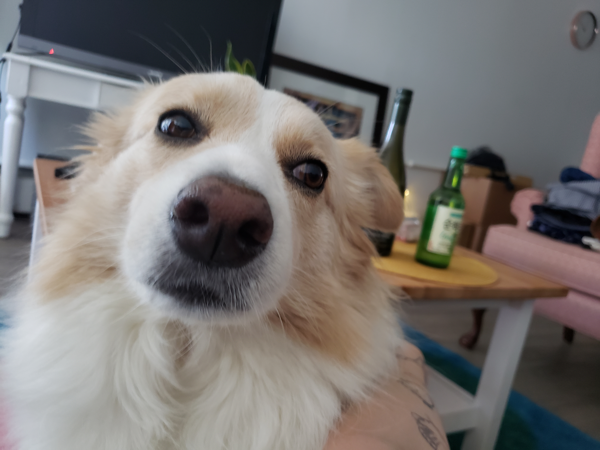
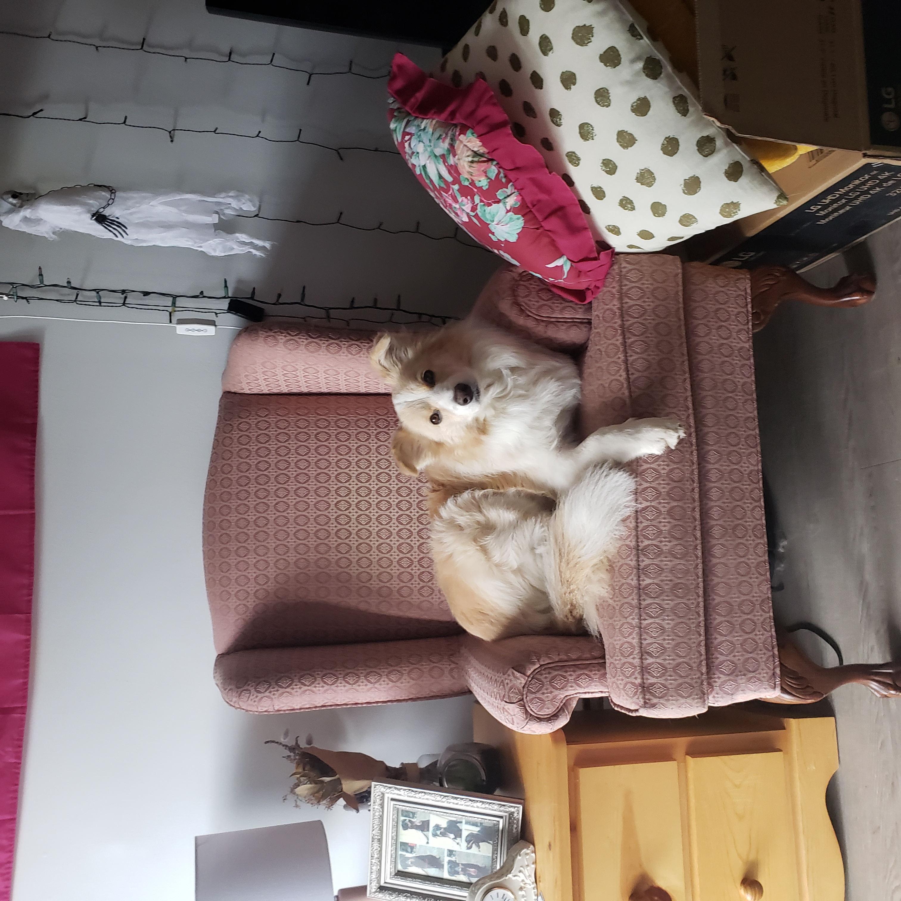
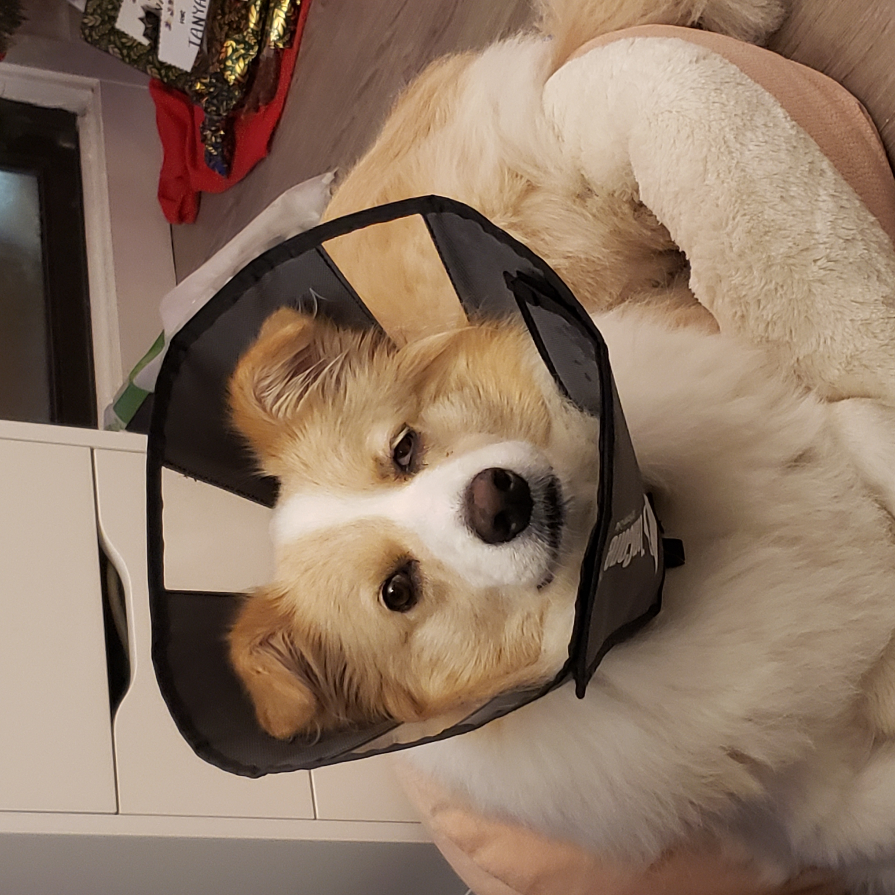
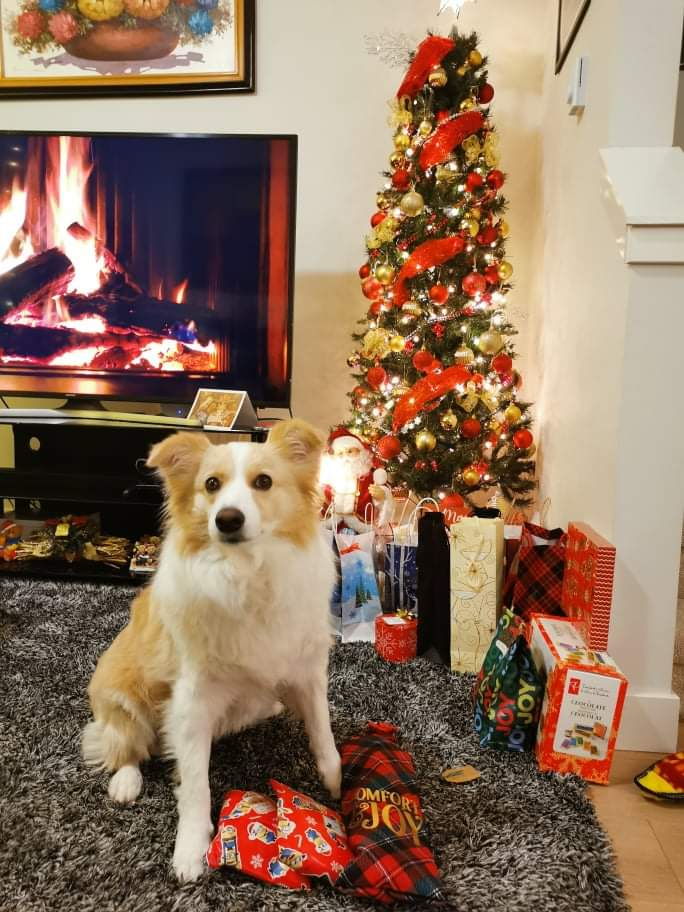
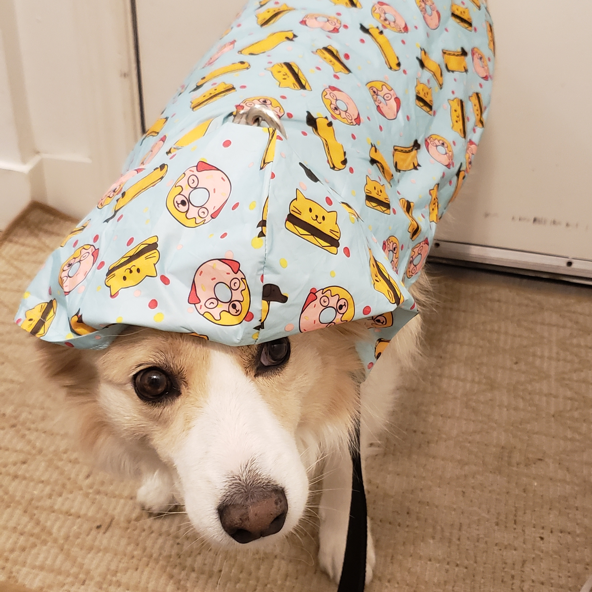
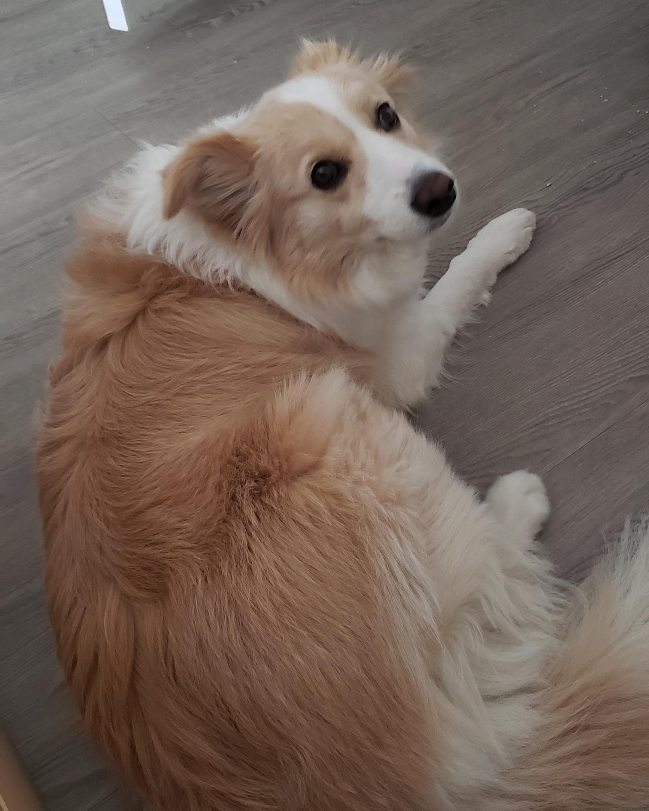
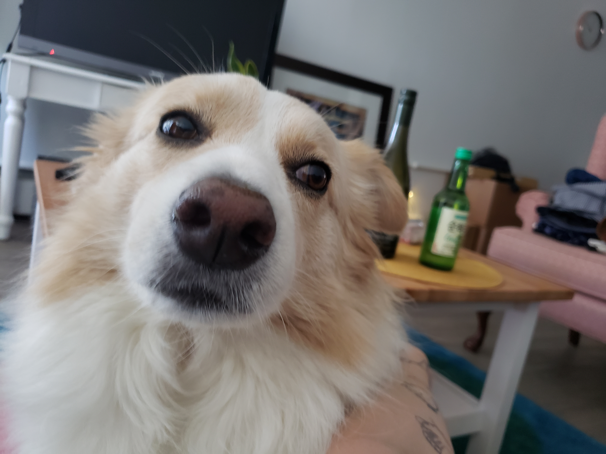
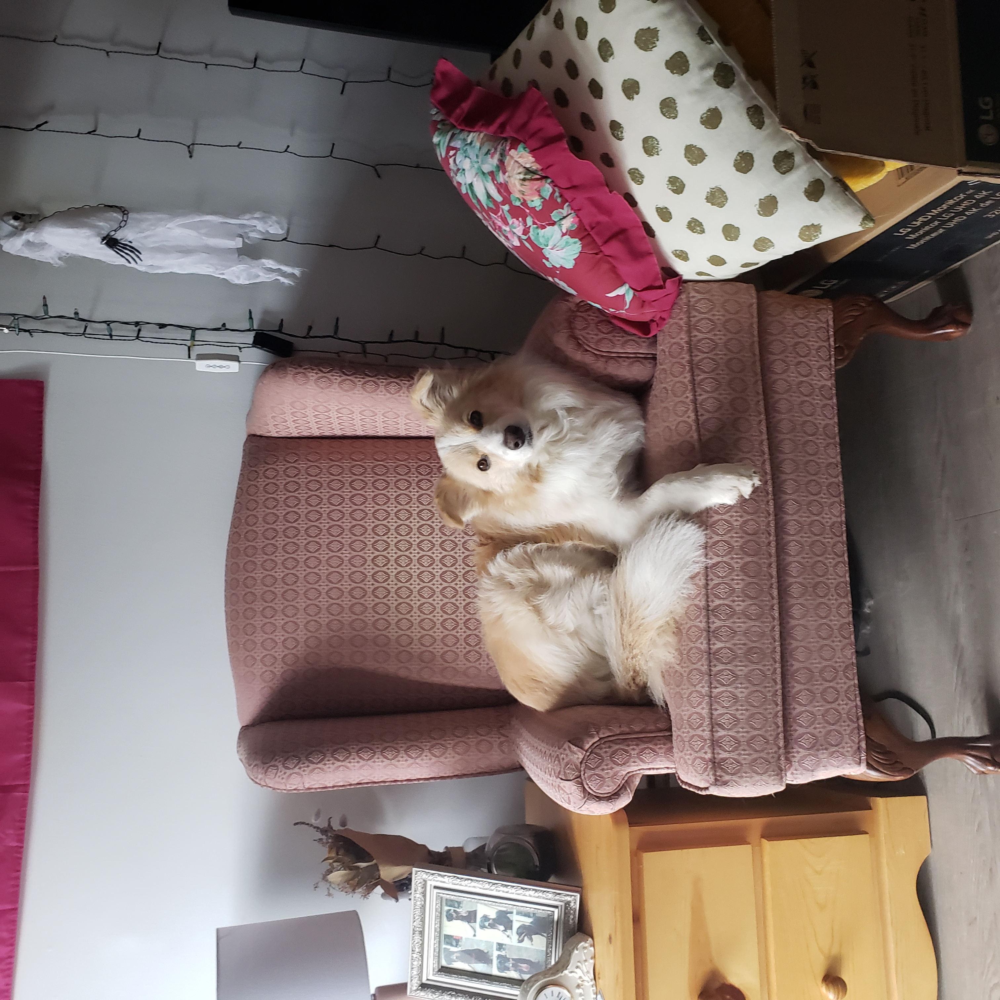
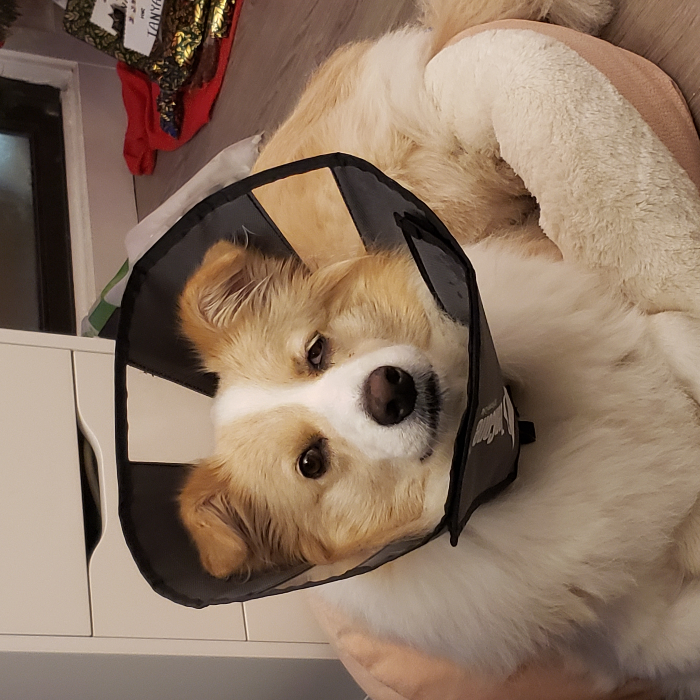
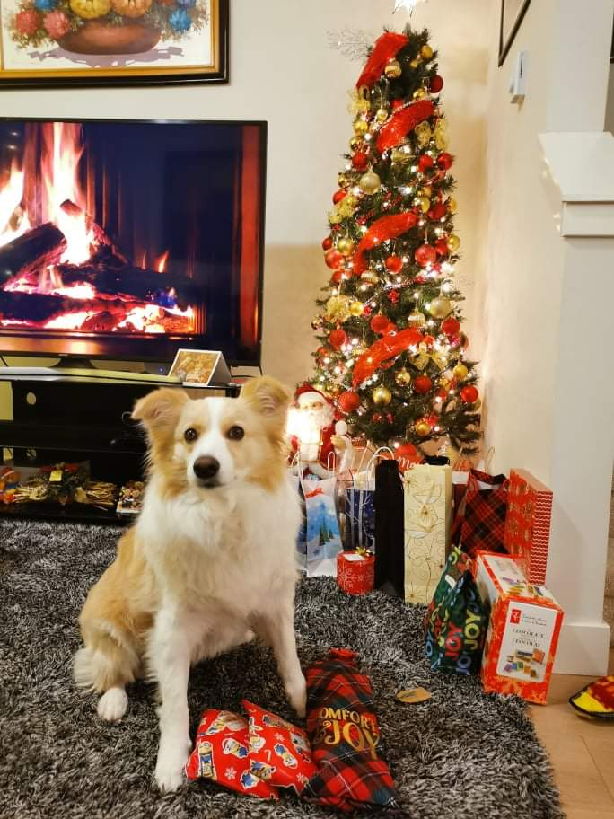
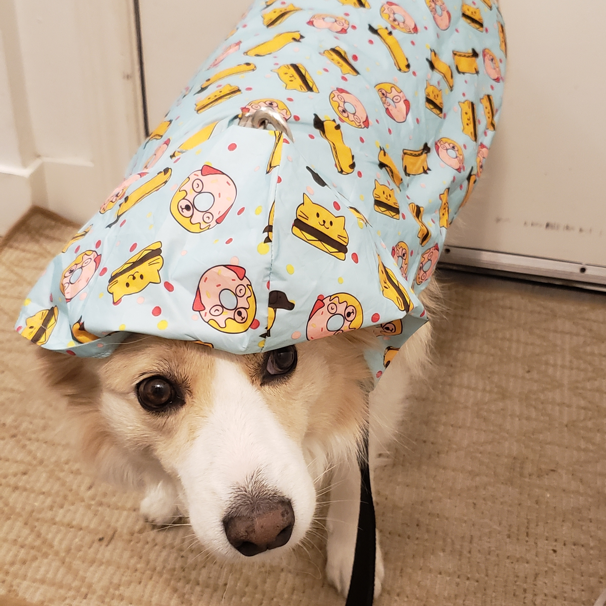
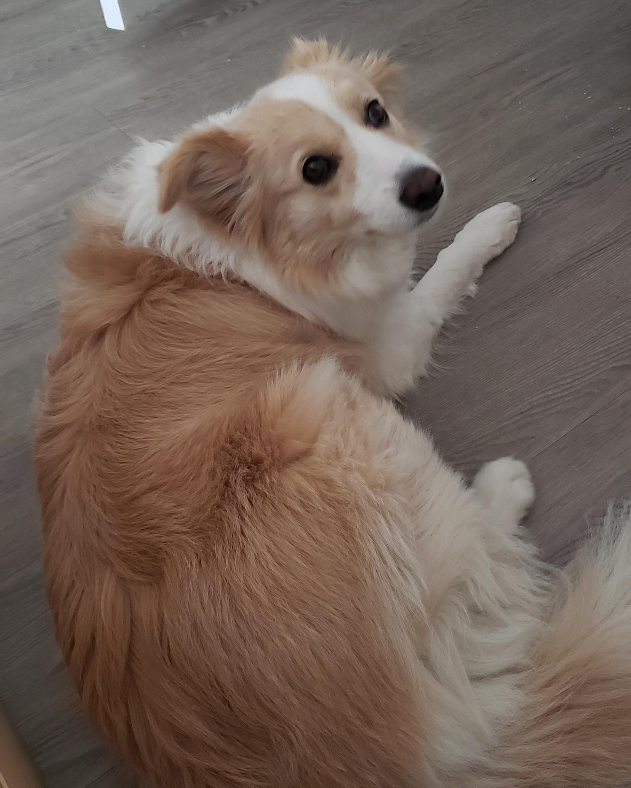